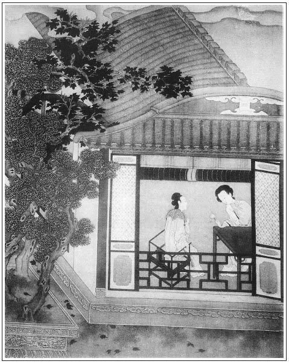

張回夫官哥死，而瓶兒死，瓶兒死而西門亦死，故訪愛月見西門之歲月有限也。月娘生於八月十五日，過十五則缺矣。今愛月姓鄭，猶雲正愛好月，又早過十五日也。豪華易老，日月如流，歌舞場中，不堪回首，奈何，奈何！
上文一路寫官哥小膽，寫貓，至此方一筆結出官哥之死，固是十二分精細。乃於官哥臨死時，寫夢子虛云「你如何盜我財物與西門慶，我如今告你去也」二句，明是子虛轉化官哥，以為瓶兒孽死之由，以與西門索債之地。二句道盡，遂使推換貓上牆，打狗關門，早為今日打狗傷人，貓驚官哥之因，一絲不差。甚矣！作者之筆，真有疏而不漏之至理存乎其中，殆奪天工之巧者乎！然後知其以前瓶兒打狗喚貓，後金蓮打狗養貓，特特照應，使看者知官哥即子虛之化身也。
千金之捨，為官哥也。玉皇廟之讖，為官哥也。王姑子家之經，為官哥也。賁四所印岳廟所捨之經，為官哥也。子虛之帳，已勾消一半。至於瓶兒之死，為官哥也。然則瓶兒死後之費，亦在官哥帳上算，實在子虛帳上算也。牆頭之物，能存幾何哉！至苗青之物，以王六兒處來，即以韓道國去，且加兩倍之利。玉樓之物，得之楊家，失於李氏，屈指算去，不差一絲。人亦何樂而貪人之財也哉！其如不省何！
何以知官哥為子虛化身也？夢子虛云：「如今我告你去也。」夫子虛已死數年，而何以不告，且必云「如今我告你去」？「如今」二字，見以先我已來討債。作孽至如今，債已將完，孽已將成，止用一告，便來捉淫婦姦夫也，明明在此。而自有《金瓶》以來，能看而悟其意者誰子？今日彼我抉其隱而發之也。
詩曰：
楓葉初丹槲葉黃，河陽愁鬢恰新霜。
鬼門徒憶空回首，泉路憑誰說斷腸？
路杳雲迷愁漠漠，珠沉玉殞事茫茫。
惟有淚珠能結雨，盡傾東海恨無疆。

話說孟玉樓和潘金蓮，在門首打發磨鏡叟去了。忽見從東一人，帶著大帽眼紗，騎著騾子，走得甚急，逕到門首下來，慌的兩個婦人往後走不迭。落後揭開眼紗，卻是韓夥計來家了。平安忙問道：「貨車到了不曾？」韓道國道：「貨車進城了，稟問老爹卸在那裡？」平安道：「爹不在家，往周爺府裡吃酒去了，教卸在對門樓上哩。你老人家請進裡邊去。」不一時，陳敬濟出來，陪韓道國入後邊見了月娘，出來廳上，拂去塵土，把行李褡褳教王經送到家去。月娘一面打發出飯來與他吃了。不一時，貨車才到。敬濟拿鑰匙開了那邊樓上門，就有卸車的小腳子領籌搬運，一箱箱都堆卸在樓上。十大車緞貨，直卸到掌燈時分。崔本也來幫扶。完畢，查數鎖門，貼上封皮，打發小腳錢出門。張夾細。早有玳安往守備府報西門慶去了。
西門慶聽見家中卸貨，吃了幾杯酒，約掌燈以後就來家。韓夥計等著見了，在廳上坐的，悉把前後往回事說了一遍。西門慶因問：「錢老爹書下了，也見些分上不曾？」韓道國道：「全是錢老爹這封書，十車貨少使了許多稅錢。小人把段箱，兩箱並一箱，三停只報了兩停，都當茶葉、馬牙香，櫃上稅過來了。通共十大車貨，只納了三十兩五錢鈔銀子。老爹接了報單，也沒差巡攔下來查點，就把車喝過來了。」張夾所以名錢老爹也，一笑。西門慶聽言，滿心歡喜，繡眉此一喜，要知其不獨為銀子便益。因說：「到明日，少不的重重買一分禮謝他。」於是吩咐陳敬濟陪韓夥計、崔大哥坐，後邊拿菜出來，留吃了一回酒，方才各散回家。
王六兒聽見韓道國來了，吩咐丫頭春香、錦兒，伺候下好茶好飯。等的晚上，韓道國到家，拜了家堂，脫了衣裳，淨了面目，夫妻二人各訴離情一遍。韓道國悉把買賣得意一節告訴老婆，老婆又見褡褳內沉沉重重許多銀兩，因問他，替己又帶了一二百兩貨物酒米，卸在門外店裡，慢慢發賣了銀子來家。張夾來保一邊不言可知，又為拐財一回作影。老婆滿心歡喜道：「我聽見王經說，又尋了個甘夥計做賣手，咱每和崔大哥與他同分利錢使，這個又好了。到出月開舖了。」韓道國道：「這裡使著了人做賣手，南邊還少個人立莊置貨，老爹一定還裁派我去。」老婆道：「你看貨才料，自古能者多勞。你不會做買賣，那老爹托你麼！常言：不將辛苦意，難得世間財。你外邊走上三年，你若懶得去，等我對老爹說了，張夾明明自任。教姓甘的和保官兒打外，你便在家賣貨就是了。」韓道國道：「外邊走熟了，也罷了。」老婆道：「可又來，你先生迷了路，在家也是閒！」說畢，擺上酒來，夫婦二人飲了幾杯闊別之酒，收拾就寢。是夜歡娛無度，不必細說。次日卻是八月初一日，韓道國早到房子內，同崔本、甘夥計看著收拾裝修土庫，不在話下。
卻說西門慶見貨物卸了，家中無事，忽然心中想起張夾後雲兜地上心來者也。要往鄭愛月兒家去。暗暗使玳安兒送了三兩銀子、一套紗衣服與他。鄭家鴇子聽見西門老爹來請他家姐兒，如天上落下來的一般，連忙收下禮物，沒口子向玳安道：「你多頂上老爹，就說他姐兒兩個都在家裡伺候老爹，請老爹早些兒下降。」玳安走來家中書房內，回了西門慶話。西門慶約午後時分，吩咐玳安收拾著涼轎，頭上戴著披巾，身上穿青緯羅暗補子直身，粉底皂靴，先走在房子看了一回裝修土庫，張夾細。然後起身，坐上涼轎，放下斑竹簾來，張旁為後雪中冷局作映。琴童、玳安跟隨，留王經在家，止叫春鴻背著直袋，逕往院中鄭愛月兒家。正是：
天仙機上整香羅，入手先拖雪一窩。
不獨桃源能問渡，卻來月窟伴嫦娥。
卻說鄭愛香兒打扮的粉面油頭，見西門慶到，笑吟吟在半門裡首迎接進去。到於明間客位，道了萬福。西門慶坐下，就吩咐小廝琴童：「把轎回了家去，晚夕騎馬來接。」琴童跟轎家去，止留玳安和春鴻兩個伺候。少頃，鴇子出來拜見，說道：「外日姐兒在宅內多有打攪，老爹來這裡，自恁走走罷了，如何又賜將禮來？又多謝與姐兒的衣服。」西門慶道：「我那日叫他，怎的不去？──只認王皇親家了！」張夾俗態可掬。鴇子道：「俺每如今還怪董嬌兒和李桂兒。繡眉開口只怪別人，是鴇兒口角。不知是老爹生日叫唱，他每都有了禮，只俺們姐兒沒有。若早知時，決不答應王皇親家唱，先往老爹宅裡去了。落後，老爹那裡又差了人來，慌的老身背著王家人，連忙攛掇姐兒打後門上轎去了。」西門慶道：「先日我在他夏老爹家酒席上，就定下他了。他若那日不去，我不消說的就惱了。怎的他那日不言不語，不做喜歡，繡眉此鄭月兒深處，西門慶淺人，所以不知。端的是怎麼說？」張夾俗態可掬。鴇子道：「小行貨子家，自從梳弄了，那裡好生出去供唱去！到老爹宅內，見人多，不知諕的怎樣的。他從小是恁不出語，嬌養慣了。繡眉語語洗髮鄭月兒嬌癡之性。你看，甚時候才起來！老身該催促了幾遍，說老爹今日來，你早些起來收拾了罷。他不依，還睡到這咱晚。」張夾總是抬高月兒，香溫玉軟，不是桂姐可比。
不一時，丫鬟拿茶上來，鄭愛香兒向前遞了茶吃了。鴇子道：「請老爹到後邊坐罷。」鄭愛香兒就讓西門慶進入鄭愛月兒的房外明間內坐下，張夾拿絕身份。西門慶看見上面楷書「愛月軒」三字。張夾點明。坐了半日，張夾拿絕身份。忽聽簾櫳響處，鄭愛月兒出來，不戴䯼髻，頭上挽著一窩絲杭州纘，梳的黑鬖鬖光油油的烏雲，雲鬢堆鴉，猶若輕煙密霧。上著白藕絲對衿仙裳，下穿紫綃翠紋裙，腳下露紅鴛鳳嘴鞋，前搖寶玉玲瓏，越顯那芙蓉粉面。正是：
若非道子觀音畫，定然延壽美人圖。
愛月兒走到下面，望上不端不正與西門慶道了萬福，就用灑金扇兒掩著粉臉坐在旁邊。西門慶注目停視，比初見時節越發齊整，不覺心搖目蕩，不能禁止。不一時，丫鬟又拿一道茶來。這粉頭輕搖羅袖，微露春纖，取一鐘，雙手遞與西門慶，然後與愛香各取一鍾相陪。吃畢，收下盞托去，請寬衣服房裡坐。西門慶叫玳安上來，把上蓋青紗衣寬了，搭在椅子上。繡眉鄭月兒深情人，不肯便滿面春風，西門慶又恐失官體，所以乍見時疏疏落落。進入粉頭房中，但見瑤窗繡幕，錦褥華裀，異香襲人，極其清雅，真所謂神仙洞府，人跡不可到者也。張夾描房正是描月兒，如此一番寫來，豈門房中可鎖者乎！彼此攀話調笑之際，只見丫鬟進來安放桌兒，擺下許多精製菜蔬。先請吃荷花細餅，鄭愛月兒親手揀攢肉絲，卷就，安放小泥金碟兒內，遞與西門慶吃。須臾，吃了餅，收了家火去，就鋪茜紅氈條，取出牙牌三十二扇，與西門慶抹牌。抹了一回，收過去，擺上酒來。但見盤堆異果，酒泛金波，十分齊整。姊妹二人遞了酒，在旁箏排雁柱，款跨絞綃──愛香兒彈箏，愛月兒琵琶，唱了一套「兜的上心來」。繡眉曲題妙絕，不獨當西門慶之心，而來情去脈，隱隱接上。張夾恰合。端的詞出佳人口，有裂石繞樑之聲。唱畢，促席而坐，拿骰盆兒與西門慶搶紅猜枚。
飲夠多時，鄭愛香兒推更衣出去了，獨有愛月兒陪著西門慶吃酒。先是西門慶向袖中取出白綾汗巾兒，上頭束著個金穿心盒兒。鄭愛月兒只道是香茶，便要打開，西門慶道：「不是香茶，是我逐日吃的補藥。繡眉分明損藥，到說是補藥，妙，妙。我的香茶不放在這裡面，只用紙包著。」於是袖中取出一包香茶桂花餅兒遞與他。那愛月兒不信，還伸手往他袖子裡掏，又掏出個紫縐紗汗巾兒，上拴著一副揀金挑牙兒，拿在手中觀看，甚是可愛。說道：「我見桂姐和吳銀姐都拿著這樣汗巾兒，原來是你與他的。」張旁妒桂姐，又在此一露口角。西門慶道：「是我揚州船上帶來的。不是我與他，誰與他的？你若愛，與了你罷。到明日，再送一副與你姐姐。」說畢，張夾西門只如此俗態可掬。西門慶就著鍾兒裡酒，把穿心盒兒內藥吃了一服，把粉頭摟在懷中，兩個一遞一口兒飲酒咂舌，無所不至。西門慶又舒手摸弄他香乳，緊緊就就賽麻圓滑膩。一面扯開衫兒觀看，白馥馥猶如瑩玉一般。揣摩良久，淫心輒起，腰間那話突然而興。解開褲帶，令他纖手籠揝。粉頭見其粗大，諕的吐舌害怕，雙手摟定西門慶脖項說道：「我的親親，你今日初會，將就我，只放半截兒罷！張夾趣言。若都放進去，我就死了。你敢吃藥養的這等大，不然，如何天生恁怪剌剌兒的──紅赤赤，紫漒漒，好砢磣人子！」西門慶笑道：「我的兒！你下去替我品品。」張夾俗態可掬。愛月兒道：「慌怎的，往後日子多如樹葉兒。今日初會，人生面不熟，再來等我替你品。」說畢，西門慶欲與他交歡，愛月兒道：「你不吃酒了？」西門慶道：「我不吃了，咱睡罷。」張夾俗態可掬。愛月兒便叫丫鬟把酒桌抬過一邊，與西門慶脫靴，他便往後邊更衣澡牝去了。西門慶脫靴時，還賞了丫頭一塊銀子，打發先上床睡，炷了香，放在薰籠內。良久，婦人進房，問西門慶：「你喫茶不吃？」西門慶道：「我不吃。」繡眉兩不吃，情急甚矣。一面掩上房門，放下綾綃來，將絹兒安放在褥下，解衣上床。張夾細。兩個枕上鴛鴦，被中鸂鶒。西門慶見粉頭肌膚纖細，牝淨無毛，猶如白面蒸餅一般，柔嫩可愛。張夾描金蓮物後，至此又以愛月這物一結。抱了抱腰肢，未盈一掬。誠為軟玉溫香，千金難買。於是把他兩隻白生生銀條般嫩腿兒夾在兩邊腰眼間，那話上使了托子，向花心裡頂入。龜頭昂大，濡攪半晌，方才沒稜。那愛月兒把眉頭縐在一處，兩手攀擱在枕上，隱忍難挨。朦朧著星眼，低聲說道：「今日你饒了鄭月兒罷！」張夾不謂其以上寫如許淫婦，而其技不窮，又是一番描寫。西門慶聽了，愈覺銷魂，肆行抽送，不勝歡娛。
正是：得多少──
春點桃花紅綻蕊，風欺楊柳綠翻腰。
西門慶與鄭月兒留戀至三更方才回家。到次日，吳月娘打發他往衙門中去了，和玉樓、金蓮、李嬌兒都在上房坐的。只見玳安進來上房取尺頭匣兒，往夏提刑送生日禮去。月娘因問玳安：「你爹昨日坐轎於往誰家吃酒，吃到那咱晚才回家？想必又在韓道國家，望他那老婆去來。原來賊囚根子成日只瞞著我，背地替他幹這等繭兒！」繡眉月娘不開口則已，開口亦不饒人。玳安道：「不是。他漢子來家，爹怎好去的！」張夾然則不來家已直供需出矣。月娘道：「不是那裡，卻是誰家？」那玳安又不說，只是笑。取了段匣，送禮去了。潘金蓮道：「大姐姐，你問這賊囚根子，他怎肯實說？我聽見說蠻小廝昨日也跟了去來，只叫蠻小廝來問就是了。」一面把春鴻叫到跟前。金蓮問：「你昨日跟了你爹轎子去，在誰家吃酒來？你實說便罷，不實說，如今你大娘就要打你。」那春鴻跪下便道：「娘休打小的，待小的說就是了。小的和玳安、琴童哥三個，跟俺爹從一座大門樓進去，轉了幾條街巷，到個人家，只半截門兒，都用鋸齒兒鑲了。門裡立著個娘娘，打扮的花花黎黎的。」金蓮聽見笑了，說道：「囚根子，一個院裡半門子也不認的？趕著粉頭叫娘娘起來。」又問道：「那個娘娘怎麼模樣？你認的他不認的？」春鴻道：「我不認的他，也像娘每頭上戴著這個假殼。進入裡面，一個白頭的阿婆出來，望俺爹拜了一拜。落後請到後邊，又是一位年小娘娘出來，不戴假殼，生的瓜子面，搽的嘴唇紅紅的，陪著俺爹吃酒。」金蓮道：「你們都在那裡坐來？」春鴻道：「我和玳安、琴童哥便在阿婆房裡，陪著俺每吃酒並肉兜子來。」把月娘、玉樓笑的了不得。因問道：「你認的他不認的？」春鴻道：「那一個好似在咱家唱的。」繡眉若玳安開口說破，有何趣味！妙在令春鴻隱隱約約畫個影子，似是而實非，涵養文情，真如生龍活虎。玉樓笑道：「就是李桂姐了。」月娘道：「原來摸到他家去來。」繡眉說來想來，自是桂姐無疑，雖百口亦難置辨，而孰知其不然。天下事不可意度如此。李嬌兒道：「俺家沒半門子。」金蓮道：「只怕你家新安了半門子是的。」問了一回。西門慶來家，就往夏提刑家拜壽去了。
卻說潘金蓮房中養的一隻白獅子貓兒，渾身純白，只額兒上帶龜背一道黑，名喚雪裡送炭，又名雪獅子。又善會口銜汗巾子，拾扇兒。張夾找品玉一回。西門慶不在房中，婦人晚夕常抱他在被窩裡睡，又不撒尿屎在衣服上，呼之即至，揮之即去，婦人常喚他是雪賊。每日不吃牛肝干魚，只吃生肉，調養的十分肥壯，毛內可藏一雞蛋。甚是愛惜他，終日在房裡用紅絹裹肉，令貓撲而撾食。張夾歷歷敘來，令人髮指。這日也是合當有事，官哥兒心中不自在，連日吃劉婆子藥，略覺好些。李瓶兒與他穿上紅緞衫兒，安頓在外間炕上頑耍，迎春守著，奶子便在旁吃飯。不料這雪獅子正蹲在護炕上，看見官哥兒在炕上，穿著紅衫兒一動動的頑耍，只當平日哄餵他肉食一般，猛然望下一跳，將官哥兒身上皆抓破了。只聽那官哥兒「呱」的一聲，倒嚥了一口氣，就不言語了，手腳俱風搐起來。慌的奶子丟下飯碗，摟抱在懷，只顧唾噦與他收驚。那貓還來趕著他要撾，被迎春打出外邊去了。如意兒實承望孩子搐過一陣好了，誰想只顧常連，一陣不了一陣搐起來。忙使迎春後邊請李瓶兒去，說：「哥兒不好了，風搐著哩，娘快去！」那李瓶兒不聽便罷，聽了，正是：
驚損六葉連肝肺，諕壞三毛七孔心。
連月娘慌的兩步做一步，逕撲到房中。見孩子搐的兩隻眼直往上吊，通不見黑眼睛珠兒，口中白沫流出，咿咿猶如小雞叫，手足皆動。一見心中猶如刀割相侵，連忙摟抱起來，臉搵著他嘴兒，大哭道：「我的哥哥，我出去好好兒，怎麼就搐起來？」迎春與奶子，悉把被五娘房裡貓所諕一節說了。那李瓶兒越發哭起來，說道：「我的哥哥，你緊不可公婆意，今日你只當脫不了打這條路兒去了！」繡眉以瓶兒之忍耐，到此時亦忍耐不住，怨恨極矣。張夾又與惠蓮一樣話。月娘聽了，一聲兒沒言語，一面叫將金蓮來，問他說：繡旁多此一問。「是你屋裡的貓諕了孩子？」金蓮問：「是誰說的？」月娘指著：「是奶子和迎春說來。」金蓮道：「你看這老婆子這等張嘴！俺貓在屋裡好好兒的臥著不是。你每怎的把孩子諕了，沒的賴人起來。爪兒只揀軟處捏，俺每這屋裡是好纏的！」月娘道：「他的貓怎得來這屋裡？」迎春道：「每常也來這邊屋裡走跳。」金蓮接過來道：「早時你說，每常怎的不撾他？可可今日兒就撾起來？你這丫頭也跟著他恁張眉瞪眼兒，六說白道的。將就些兒罷了，怎的要把弓兒扯滿了？可可兒俺每自恁沒時運來。」繡旁惹他開口。於是使性子抽身往房裡去了。張夾利口可畏。看官聽說：潘金蓮見李瓶兒有了官哥兒，西門慶百依百隨，要一奉十，故行此陰謀之事，馴養此貓，必欲諕死其子，使李瓶兒寵衰，教西門慶復親於己。就如昔日屠岸賈養神獒文旁此處若非作者叫破，幾被他瞞過去，故曰潘金蓮死官哥也。害趙盾丞相一般。繡眉此亦在有意無意間，未必如所言者之甚也。張夾又明插一證。正是：
花枝葉底猶藏刺，人心怎保不懷毒。
月娘眾人見孩子只顧搐起來，一面熬薑湯灌他，一面使來安兒快叫劉婆去。不一時，劉婆子來到，看了脈息，只顧跌腳，說道：「此遭驚諕重了，難得過了。快熬燈心薄荷金銀湯。」取出一丸金箔丸來，向鍾兒內研化。牙關緊閉，月娘連忙拔下金簪兒來，撬開口，灌下去。劉婆道：「過得來便罷。如過不來，告過主家奶奶，必須要灸幾醮才好。」月娘道：「誰敢耽？必須等他爹來問了不敢。灸了，惹他來家吆喝。」李瓶兒道：「大娘救他命罷！若等來家，只恐遲了。若是他爹罵，等我承當就是了。」月娘道：「孩兒是你的孩兒，張夾奇談。隨你灸，我不敢張主。」當下，劉婆子把官哥兒眉攢、脖根、兩手關尺並心口，共灸了五醮，放他睡下。那孩子昏昏沉沉，直睡到日暮時分西門慶來家還不醒。那劉婆見西門慶來家，月娘與了他五錢銀子，一溜煙從夾道內出去了。張夾月娘可殺。文旁此則月娘之誤也，然到底是好心，不是惡意。「又請」二宇，可見非與劉婆子同謀，必須此人也。批者於其正室必然不和，故借月娘以洩氣也。
西門慶歸到上房，月娘把孩子風搐不好對西門慶說了，西門慶連忙走到前邊來看視，見李瓶兒哭的眼紅紅的，問：「孩兒怎的風搐起來？」李瓶兒滿眼落淚，只是不言語。問丫頭、奶子，都不敢說。西門慶又見官哥手上皮兒去了，灸的滿身火艾，心中焦燥，又走到後邊問月娘。月娘隱瞞不住，只得把金蓮房中貓驚諕之事說了：「劉婆子剛才看，說是急驚風，若不針灸，難過得來。若等你來，只恐怕遲了。他娘母子自主張，叫他灸了孩兒身上五醮，才放下他睡了。這半日還未醒。」西門慶不聽便罷，聽了此言，三屍暴跳，五臟氣沖，怒從心上起，惡向膽邊生，直走到潘金蓮房中，不由分說，尋著雪獅子，提著腳走向穿廊，望石台基輪起來只一摔，只聽響亮一聲，腦漿迸萬朵桃花，滿口牙零噙碎玉。正是：
不在陽間擒鼠耗，卻歸陰府作狸仙。
潘金蓮見他拿出貓去摔死了，坐在炕上風紋也不動。張夾畫。待西門慶出了門，口裡喃喃吶吶罵道：「賊作死的強盜，把人妝出去殺了才是好漢！一個貓兒礙著你吃屎？亡神也似走的來摔死了。他到陰司裡，明日還問你要命，你慌怎的？張夾然則武大並一貓之不若矣。賊不逢好死變心的強盜！」繡眉西門慶正在氣頭上，又不敢明嚷，又不能暗忍，明嚷恐討沒趣，暗忍又恐人笑，等其去後，卻牢牢叨叨作絮語，妙得其情。西門慶走到李瓶兒房裡，因說奶子、迎春：「我教你好看著孩兒，怎的教貓諕了他，把他手也撾了！又信劉婆子那老淫婦，平白把孩子灸的恁樣的。若好便罷，不好，把這老淫婦拿到衙門裡，與他兩拶！」李瓶兒道：「你看孩兒緊自不得命，你又是恁樣的。孝順是醫家，他也巴不得要好哩。」李瓶兒只指望孩兒好來，不料被艾火把風氣反於內，變為慢風，張夾月娘可殺，理星入室罪已難辭，劉婆子又踵禍轍，吾將百割此等壞事婦人也。文旁批者與月娘想是前生冤孽，何至百割方快！然則官哥之死，月娘實殺之？何不通乃爾。內裡抽搐的腸肚兒皆動，尿屎皆出，大便屙出五花顏色，眼目忽睜忽閉，終朝只是昏沉不省，奶也不吃了。李瓶兒慌了，到處求神問卜打卦，皆有凶無吉。月娘瞞著西門慶又請劉婆子來家跳神，張夾該殺。又請小兒科太醫來看。都用接鼻散試之：若吹在鼻孔內打鼻涕，還看得；若無鼻涕出來，則看陰騭守他罷了。張夾岐黃為此言自全者無數。於是吹下去，茫然無知，並無一個噴涕出來。越發晝夜守著哭涕不止，連飲食都減了。
看看到八月十五日將近，月娘因他不好，連自家生日都回了不做，親戚內眷，就送禮來也不請。家中止有吳大妗子、楊姑娘並大師父來相伴。那薛姑子和王姑子兩個，在印經處爭分錢不平，又使性兒，彼此互相揭調。張夾百忙中點醒愚人佞佛者。十四日，賁四同薛姑子催討，將經卷挑將米，一千五百卷都完了。李瓶兒又與了一弔錢買紙馬香燭。十五日同陳敬濟早往岳廟裡進香紙，把經看著都散施盡了，走來回李瓶兒話。喬大戶家，一日一遍使孔嫂兒來看，張夾細。又舉薦了一個看小兒的鮑太醫來看，說道：「這個變成天弔客忤，治不得了。」張夾自己延遲。白與了他五錢銀子，打發去了。灌下藥去也不受，還吐出了。只是把眼合著，口中咬的牙格支支響。李瓶兒通衣不解帶張夾此處著此語，傷盡天下孝子心。，晝夜抱在懷中，眼淚不幹的只是哭。西門慶也不往那裡去，每日衙門中來家，就進來看孩兒。那時正值八月下旬天氣，張夾點明八月，一絲不率，瓶兒以八月來也。李瓶兒守著官哥兒睡在床上，桌上點著銀燈，丫鬟養娘都睡熟了。覷著滿窗月色，更漏沉沉，果然愁腸萬結，離思千端。
正是：
人逢喜事精神爽，悶來愁腸瞌睡多。
但見：
銀河耿耿，玉漏迢迢。穿窗皓月耿寒光，透戶涼風吹夜氣。樵樓禁鼓，一更未盡一更敲；別院寒砧，千搗將殘千搗起。畫簷前叮噹鐵馬，敲碎思婦情懷；銀台上閃爍燈光，偏照佳人長歎。一心只想孩兒好，誰料愁來睡夢多。
當下，李瓶兒臥在床上，似睡不睡，夢見花子虛從前門外來，身穿白衣，恰似活時一般。見了李瓶兒，厲聲罵道：「潑賊淫婦，你如何抵盜我財物與西門慶？如今我告你去也。」被李瓶兒一手扯住他衣袖，央及道：「好哥哥，你饒恕我則個！」花子虛一頓，撒手驚覺，卻是南柯一夢。繡眉國家將亡，必有妖孽，好時偏不夢見。醒來，手裡扯著卻是官哥兒的衣衫袖子。張夾分明說官哥為子虛化身，與後孝哥為西門化身作一遙對章法。讀此二句，益信予非謬。連噦了幾口道：「怪哉！怪哉！」聽一聽更鼓，正打三更三點。李瓶兒諕的渾身冷汗，毛髮皆豎。
到次日，西門慶進房來，就把夢中之事告訴一遍。西門慶道：「知道他死到那裡去了！此是你夢想舊境。只把心來放正著，休要理他。如今我使小廝拿轎子接了吳銀兒來，與你做個伴兒。再把老馮叫來伏侍兩日。」玳安打院裡接了吳銀兒來。那消到日西時分，那官哥兒在奶子懷裡只搐氣兒了。慌的奶子叫李瓶兒：「娘，你來看哥哥，這黑眼睛珠兒只往上翻，口裡氣兒只有出來的，沒有進去的。」這李瓶兒走來抱到懷中，一面哭起來，叫丫頭：「快請你爹去！你說孩子待斷氣也。」可可常峙節又走來說話，繡眉常峙節不先不後偏到此時來，真若有窮鬼使之者然。張夾必於忙中插一閒筆，文字直是千伶百俐。告訴房子兒尋下了，門面兩間，二層，大小四間，只要三十五兩銀子。西門慶聽見後邊官哥兒重了，就打發常峙節起身，說：「我不送你罷，改日我使人拿銀子和你看去。」急急走到李瓶兒房中。月娘眾人都在房裡瞧著，那孩子在他娘懷裡一口口搐氣兒。繡眉情景逼真。西門慶不忍看他，走到明間椅子上坐著，只長吁短歎。張夾寫的出，真是生龍活虎。非耍木偶人者。
那消半盞茶時，官哥兒嗚呼哀哉，斷氣身亡。時八月廿三日申時也，只活了一年零兩個月。張旁瓶兒去年嫁期也，一絲不錯，方見為子虛轉世。閤家大小放聲號哭。那李瓶兒撾耳撓腮，一頭撞在地下，哭的昏過去。半日方才蘇省，摟著他大放聲哭張夾寫得出。叫道：「我的沒救星兒，心疼殺我了！寧可我同你一答兒裡死了罷，我也不久活在世上了。我的拋閃殺人的心肝，撇的我好苦也！」那奶子如意兒和迎春在旁，哭的言不得，動不得。張夾寫得到。西門慶即令小廝收拾前廳西廂房乾淨，文旁作者令人思摸不出，如生龍活虎。放下兩條寬凳，要把孩子連枕席被褥抬出去那裡挺放。那李瓶兒倘在孩兒身上，兩手摟抱著，那裡肯放！口口聲聲直叫：「沒救星的冤家！嬌嬌的兒！生揭了我的心肝去了！撇的我枉費辛苦，干生受一場，再不得見你了，我的心肝！……」月娘眾人哭了一回，在旁勸他不住。西門慶走來，見他把臉抓破了，滾的寶髻蓬鬆，烏雲散亂，便道：「你看蠻的！他既然不是你我的兒女，干養活他一場，他短命死了，哭兩聲丟開罷了，繡眉畢竟男子漢轉念快。如何只顧哭了去！又哭不活他，你的身子也要緊。張夾後渡。如今抬出去，好叫小廝請陰陽來看。──這是甚麼時候？」月娘道：「這個也有申時前後。」玉樓道：「我頭裡怎麼說來？他管情還等他這個時候才去。──原是申時生，還是申時死。張旁一時不差，方是孽化。日子又相同，都是二十三日，只是月分差些。圓圓的一年零兩個月。」李瓶兒見小廝每伺候兩旁要抬他，又哭了，說道：「慌抬他出去怎麼的？大媽媽，你伸手摸摸，他身上還熱哩！」繡旁婦人癡語酷肖。張夾寫得出。叫了一聲：「我的兒樂！你教我怎生割捨的你去？坑得我好苦也！……」一頭又撞倒在地下，哭了一回。眾小廝才把官哥兒抬出，停在西廂房內。
月娘向西門慶計較：「還對親家那裡並他師父廟裡說聲去。」西門慶道，「他師父廟裡，明早去罷。」一面使玳安往喬大戶家說了，一面使人請了徐陰陽來批書。又拿出十兩銀子與賁四，教他快抬了一付平頭杉板，令匠人隨即攢造了一具小棺槨兒，就要入殮。喬宅那裡一聞來報，喬大戶娘子隨即坐轎子來，進門就哭。月娘眾人又陪著大哭了一場，告訴前事一遍。不一時，陰陽徐先生來到，看了，說道：「哥兒還是正申時永逝。」月娘吩咐出來，教與他看看黑書。徐先生將陰陽秘書瞧了一回，說道：「哥兒生於政和丙申六月廿三日申時，卒於政和丁酉八月廿三日申時。月令丁酉，日干壬子，犯天地重喪，張旁映瓶兒。本家要忌：忌哭聲。親人不忌。入殮之時，蛇、龍、鼠、兔四生人，避之則吉。又黑書上云：壬子日死者，上應寶瓶宮，下臨齊地。他前生曾在兗州蔡家作男子，曾倚力奪人財物，張夾明說子虛來西門家之故，並瓶兒之孽。吃酒落魄，張夾明說子虛前身。不敬天地六親，橫事牽連，張夾明說子虛。遭氣寒之疾，久臥床席，穢污而亡。張夾明說子虛。今生為小兒，亦患風癇之疾。十日前被六畜驚去魂魄，又犯土司太歲，先亡攝去魂魄，托生往鄭州王家為男子，後作千戶，壽六十八歲而終。」須臾，徐先生看了黑書，「請問老爹，明日出去，或埋或化？」西門慶道：「明日如何出得！擱三日，念了經，到五日出去，墳上埋了罷。」徐先生道：「二十七日丙辰，閤家本命都不犯，宜正午時掩土。」批畢書，一面就收拾入殮，已有三更天氣。李瓶兒哭著往房中，尋出他幾件小道衣、道髻、鞋襪之類，替他安放在棺槨內，張夾傷心慘目有如是耶？釘了長命釘，閤家大小又哭了一場，打發陰陽去了。
次日，西門慶亂著，也沒往衙門中去。夏提刑打聽得知，早晨衙門散時，就來弔問。又差人對吳道官廟裡說知，到三日，請報恩寺八眾僧人在家誦經。張夾亦是報恩寺僧唸經，明對子虛。吳道官廟裡並喬大戶家，俱備折卓三牲來祭奠。張夾一番二家。吳大舅、沈姨夫、門外韓姨夫、花大舅都有三牲祭卓來燒紙。張夾又一番寫四家。應伯爵、謝希大、溫秀才、常峙節、韓道國、甘出身、賁第傳、李智、黃四都斗了分資，晚夕來與西門慶伴宿。張夾又一番寫九家，總為西門死一襯。打發僧人去了，叫了一起提偶的，張夾明說世人。先在哥兒靈前祭畢，然後，西門慶在大廳上放桌席管待眾人。
那日院中李桂姐、吳銀兒並鄭月兒三家，都有人情來上紙。張夾又找三家。李瓶兒思想官哥兒，每日黃懨懨，連茶飯兒都懶待吃，題起來只是哭涕，把喉音都哭啞了。西門慶怕他思想孩兒，尋了拙智，白日裡吩咐奶子、丫鬟和吳銀兒相伴他，不離左右。晚夕，西門慶一連在他房中歇了三夜，枕上百般解勸。薛姑子夜間又替他念《楞嚴經》、《解冤咒》，勸他：「休要哭了。他不是你的兒女，都是宿世冤家債主。張夾明說子虛矣。《陀羅經》上不說的好：昔日有一婦人，生產孩兒三遍，俱不過兩歲而亡，婦人悲啼不已。抱兒江邊，不忍拋棄。感得觀世音菩薩化作一僧，謂此婦人曰：『不用啼哭，此非你兒，是你生前冤家。三度托生，皆欲殺汝。你若不信，我交你看。』將手一指，其兒遂化作一夜叉之形，向水中而立，報言：『汝曾殺我來，我特來報冤。張夾明說出子虛矣。今因汝常持《佛頂心陀羅經》，善神日夜擁護，所以殺汝不得。我已蒙觀世音菩薩受度了，從今永不與汝為冤。』道畢，遂沉水中不見。不該我貧僧說，你這兒子，必是宿世冤家，托來你蔭下，化目化財，要惱害你身。張夾明言子虛轉世。為你捨了此《佛頂心陀羅經》一千五百卷，有此功行，他害你不得，故此離身。繡眉一邊捨經而一邊人死，似難再言因果矣。而薛姑反以人死為捨經一報，說得有源有委，利嘴之可長如此，尼僧之利嘴如此。張夾然則銀球反成禍種。到明日再生下來，才是你兒女。」繡旁此一轉更妙。李瓶兒聽了，終是愛緣不斷。但題起來，輒流涕不止。張夾死已有因矣。
須臾過了五日，到廿七日早晨，雇了八名青衣白帽小童，大紅銷金棺與幡幢、雪蓋、玉梅、雪柳圍隨，前首大紅銘旌，題著「西門塚男之樞」。張夾作孽。吳道官廟裡，又差了十二眾青衣小道童兒來，繞棺轉咒《生神玉章》，動清樂送殯。眾親朋陪西門慶穿素服走至大街東口，將及門上，才上頭口。張夾作孽。西門慶恐怕李瓶兒到墳上悲痛，不叫他去。只是吳月娘、李嬌兒、孟玉樓、潘金蓮、大姐，家裡五頂轎子，陪喬親家母、大妗子和李桂兒、鄭月兒、吳舜臣媳婦鄭三姐往墳頭去，張夾墳頭去者十人。留下孫雪娥、吳銀兒並兩個姑子在家與李瓶兒做伴兒。張夾留下作拌者四人。李瓶兒見不放他去，見棺材起身，送出到大門首，趕著棺材大放聲，一口一聲只叫：「不來家虧心的兒樂！」叫的連聲氣破了。不防一頭撞在門底下，把粉額磕傷，金釵墜地，張夾寫得出。慌的吳銀兒與孫雪娥向前搊扶起來，勸歸後邊去了。到了房中，見炕上空落落的，只有他耍的那壽星博浪鼓兒還掛在床頭上，想將起來，繡眉記瓶兒初進門時何等冷落，尚歡喜忍耐，今雖子死，實無減於舊，遂淒涼痛苦如此，何人心之不能平耶。張夾博浪鼓一結，小小物事用入文字，便令無窮血淚皆向此中灑出，真是奇絕文字。拍了桌子，又哭個不了。吳銀兒在旁，拉著他手勸說道：「娘少哭了，哥哥已是拋閃你去了，那裡再哭得活！你須自解自歎，休要只顧煩惱。」張夾無心人如畫。雪娥道：「你又年少青春，愁到明日養不出來也怎的？這裡牆有縫，壁有眼，俺每不好說的。他使心用心，反累己身。他將你孩子害了，教他一還一報，問他要命。不知你我被他活埋了幾遭了！只要漢子常守著他便好，到人屋裡睡一夜兒，他就氣生氣死。早是前者，你每都知道，漢子等閒不到我後邊，才到了一遭兒，你看他就背地裡唧喳成一塊，對著他姐兒每說我長道我短。俺每也不言語，每日洗眼兒看著他。這個淫婦，到明日還不知怎麼死哩！」繡眉三句語就到自己心事，積恨之深可想。張夾有心事人又如畫。李瓶兒道：「罷了，我也惹了一身病在這裡，不知在今日明日死，和他也爭執不得了，隨他罷！」張夾一語直至碧落黃泉，無分訴處。
正說著，只見奶子如意兒向前跪下，哭道：「小媳婦有句活，不敢對娘說──今日哥兒死了，乃是小媳婦沒造化。只怕往後爹與大娘打發小媳婦出去，小媳婦男子漢又沒了，那裡投奔？」李瓶兒見他這般說，又心中傷痛起來，便道：「怪老婆，孩子便沒了，我還沒死哩！總然我到明日死了，你恁在我手下一場，我也不教你出門。往後你大娘生下哥兒小姐來，交你接了奶，就是一般了。你慌亂的是甚麼？」那如意兒方才不言語了。張夾如意又自有心事，又安如意後文之根。李瓶兒良久又悲慟哭起來，張夾真是悲從中來。雪娥與吳銀兒兩個又解勸說道：「你肚中吃了些甚麼，只顧哭了去！」一面叫繡春後邊拿了飯來，擺在桌上，陪他吃。那李瓶兒怎生嚥下去！只吃了半甌兒，就丟下不吃了。
西門慶在墳上，叫徐先生畫了穴，把官哥兒就埋在先頭陳氏娘懷中，抱孫葬了。那日喬大戶並眾親戚都有祭祀，就在新蓋卷棚管待飲酒一日。來家，李瓶兒與月娘、喬大戶娘子、大妗子磕著頭又哭了。向喬大戶娘子說道：「親家，誰似奴養的孩兒不氣長，短命死了。既死了，累你家姐姐做了望門寡，勞而無功，親家休要笑話。」喬大戶娘子說道：「親家怎的這般說話？孩兒每各人壽數，誰人保的後來的事！常言：先親後不改。親家每又不老，往後愁沒子孫？須要慢慢來。親家也少要煩惱了。」說畢，作辭回家去了。張夾親家休矣。
西門慶在前廳教徐先生灑掃，各門上都貼辟非黃符。死者煞高三丈，向東北方而去，遇日游神衝回不出，斬之則吉，親人不忌。西門慶拿出一疋大布、二兩銀子謝了徐先生，管待出門。晚夕入李瓶兒房中陪他睡。夜間百般言語溫存。見官哥兒的戲耍物件都還在跟前，恐怕這瓶兒看見思想煩惱，都令迎春拿到後邊去了。張夾隨手收拾博浪鼓，如撕金扇一樣章法。正是：
思想嬌兒晝夜啼，寸心如割命懸絲。
世間萬般哀苦事，除非死別共生離。
文回文禹門云：上一回與下一回，均是半苦半樂，一喜一忱；如天時一日之間，前半天晴日皎潔，後半天陰雨淒涼。又如地方百里之內，前五十山路崎嶇，後五十大道平坦，漸有滄桑景象。正是消長機關，不似五十回前，得意順心，逢凶化吉。從此六十回後，迴光返照，樂極生悲。看《金瓶梅》者，當於此處留神，不可含糊看過也。
此回官哥之死，若非作者點明詭計陰謀，幾被金蓮瞞過。
小兒膽小，屢次受驚，一旦生風，金蓮又不在側。縱貓為金蓮所養，小畜何知？即使抓破臉皮，又與金蓮何涉？況前後兩次皆與經濟調情，其意不在官哥，亦非有心驚駭也。何指定官哥是其所害，金蓮能默然乎？知官哥初生之時，金蓮已有死之之意，言之屢屢，玉樓固習聞之。平日喂貓，何事以紅絹裹肉？險極矣，我甚畏之。入門以來，殺其奴僕，殺其姬妾，今又殺其子，不久殺其夫。迨西門慶被殺，直殺西門全家矣。此禍水也，避之不及，胡乃唸唸於品玉、吹蕭、醉鬧、水戰諸處，是真活而不願活矣。
此回官哥之死，李氏哭破其故。月娘心中明白，玉樓諸人亦無不明白，不但如意、迎春等也。玉樓此刻不說大姐姐不管矣。其胸中已早有定見，其餘逢場作戲。官哥死未嘗不哭，亦未嘗不快。惟月娘始終保護，尚不愧為嫡母，何閱者責之之甚也。